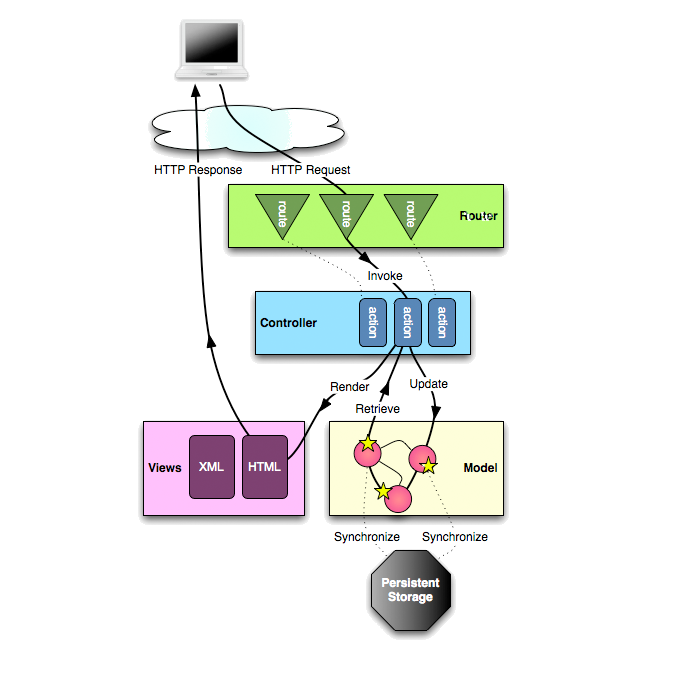

FRAMEWORKS OF SCALA AVAILABLE IN MARKET:
Coeus. A traditional MVC web framework for Scala.
Unfiltered. A toolkit for servicing HTTP requests in Scala.
Amore. A Scala port of the Ruby web framework Sinatra
Scales XML. Flexible approach to XML handling and a simplified way of interacting with XML.
Belt. A Rack-like interface for web applications built on top of Scalaz-HTTP
Frank. Web application DSL built on top of Scalaz/Belt
MixedBits. A framework for the Scala progamming language to help build web sites
Circumflex. Unites several self-contained open source projects for application development using the Scala programming language.
Scala Webmachine. Port of Basho's webmachine in Scala, a REST-based system for building web applications
Bowler. A RESTful, multi-channel ready Scala web framework
Play: Play is an open source web application framework, written in Scala .which follows the model–view–controller (MVC) architectural pattern
WHY CHOOSE PLAY?
Simple ,it's fast .Mainly because,
Play is a stateless, asynchronous, and non-blocking framework that uses an underlying fork-join thread pool to do work stealing for network operations, and can leverage Akka for user level operations.
FLOW OF PLAY FRAMEWORK?
LIFE CYCLE FOR PLAY FRAMEWORK?
